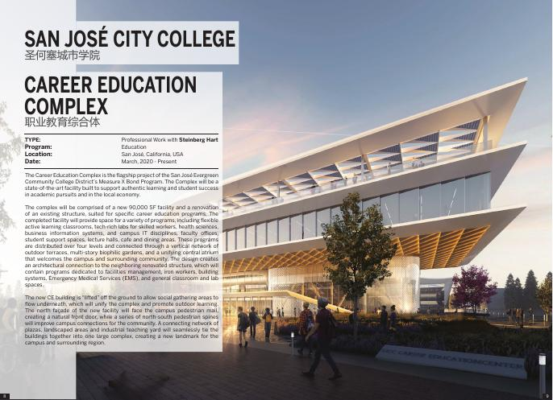
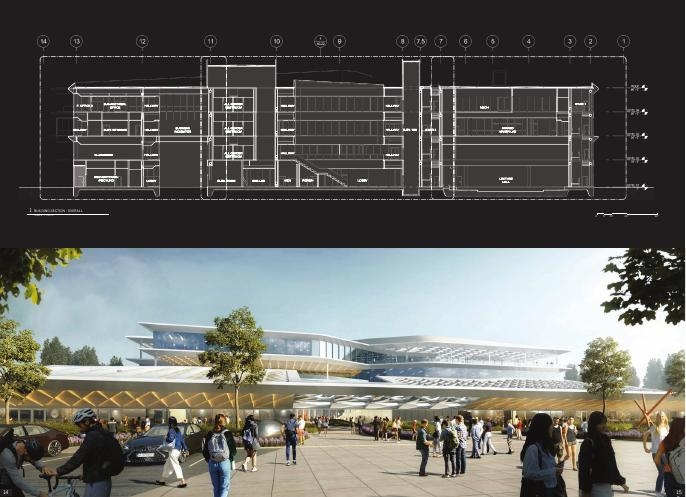
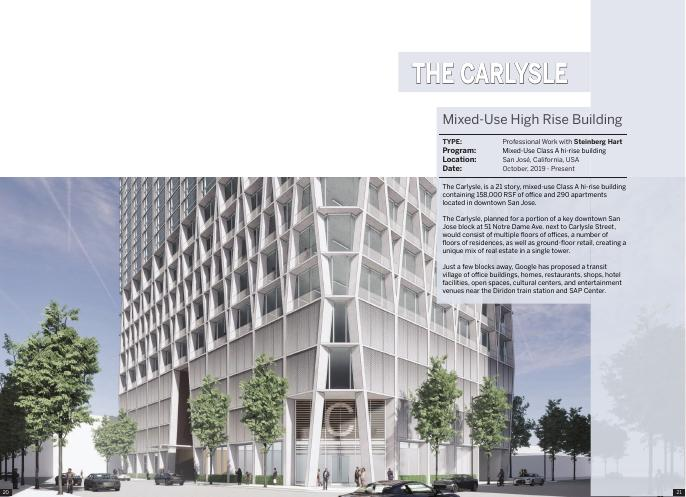

Software engineer · creative technologist
Useful AI for
creative work.
I build AI-powered tools, 3D experiences, and production software at the intersection of technology, design, and media.
in context
build02
connect03
iterate creative systems / 2026
Selected work / 01
From creative
intent to impact.
Featured case study / independent
DramaClips
as a creative system.
A mobile short-drama preview funnel and protected operations workspace. I designed and built the connective tissue between creative judgment, AI-assisted production, publishing, and measurable audience flow.
Role / context / focus / tools
Role Product engineer, system designer
Context Independent creative operations platform
Focus Applied AI, workflow orchestration, content systems
Tools Next.js, Supabase, Cloudflare R2, Railway, Vizard, OpenAI API
What this demonstrates
Rather than presenting AI as a standalone feature, this project places it inside a real workflow: source media becomes reviewable creative output, approved assets become publishable packages, and audience actions remain traceable without overstating provider conversions or revenue.
How I work
Good technology
makes room for
better questions.
I bring a designer's eye to software problems: understand the people and the workflow first, then make the system legible, useful, and easy to improve.
Map the handoffs between people, tools, data, and decisions.
Turn promising ideas into functional, testable workflows.
Communicate technical possibilities in practical creative language.
A continuous practice
My path runs from architecture and visualization through computational design and fabrication into production software and applied AI.
That range helps me translate between creative teams and engineering systems — and recognize where a thoughtful tool can unlock the next iteration.
Experience / selected
Different
lenses.
Selected visual work / 3D + design technology
Systems you
can see.
Before software, I worked through space, material, light, and computational logic. That visual judgment still shapes how I prototype creative tools.



Resume / currently based in Sunnyvale, CA
Engineering
with context.
Software engineering, applied AI, creative systems, 3D visualization, and computational design.
Request resume ↗Have a hard, interesting problem?